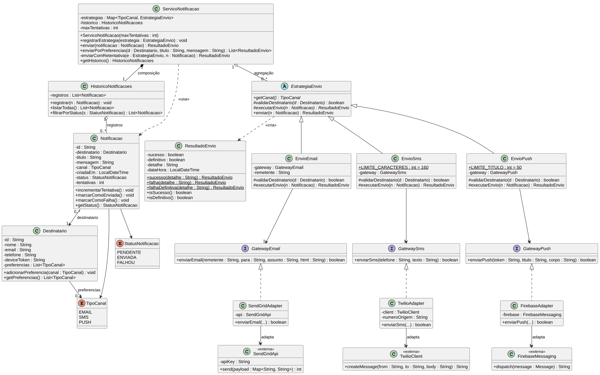
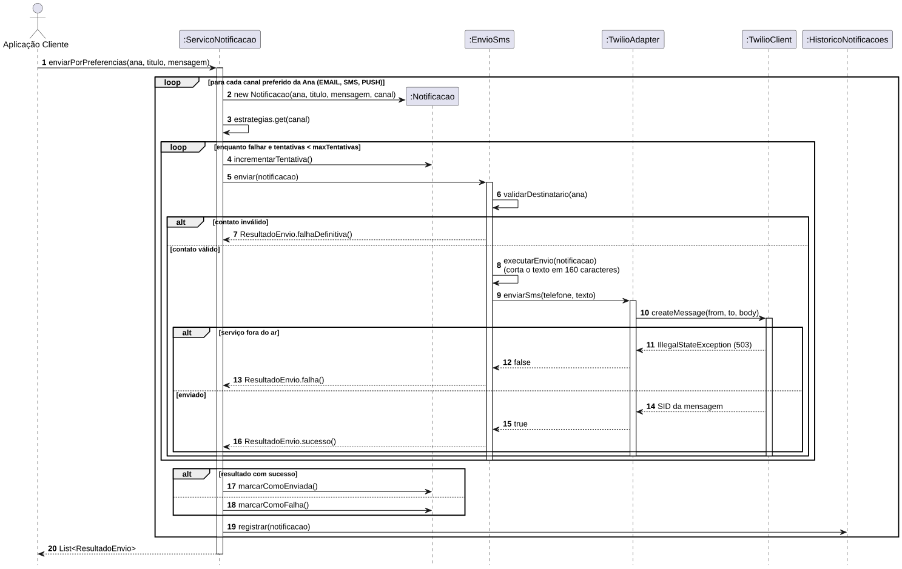
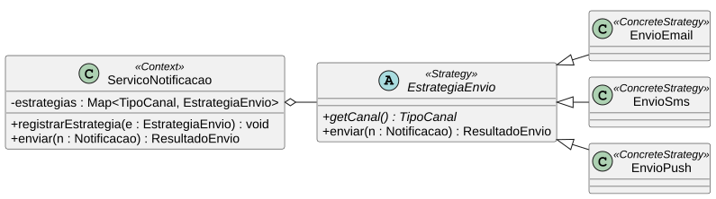
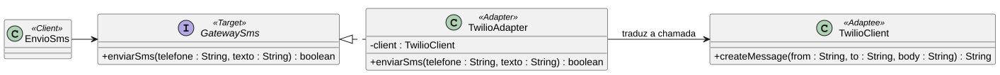

1. Etapa 1: Definição e modelagem UML
1.1 Documento de visão do sistema
1.2 Diagrama de classes
1.3 Diagrama de sequência
2. Etapa 2: Aplicação de padrões de projeto
2.1 Padrões escolhidos
2.2 Strategy (comportamental)
2.3 Adapter (estrutural)
2.4 Os dois padrões juntos
3. Etapa 3: Prova de conceito
3.1 Padrão escolhido e organização do código
3.2 Trechos principais
3.3 Execução
4. Repositório
5. Considerações finais
Referências
Para a definição do problema segui o mesmo roteiro usado no material da disciplina para o Sistema de Controle de Biblioteca: primeiro o documento de visão, com objetivo, escopo, stakeholders e requisitos, e depois os diagramas UML, feitos em PlantUML, com o código de cada diagrama e a explicação dele.
Sistema de Notificação (SN).
Desenvolver um módulo que envie avisos para os usuários de uma aplicação por três canais: e-mail, SMS e notificação push. Quase todo sistema que a gente usa manda esse tipo de aviso (a loja confirma o pedido por e-mail, o banco manda código por SMS, o aplicativo de entrega manda push quando o pedido sai), então a ideia é ter um componente reaproveitável que cuide disso.
O que torna o problema interessante é que cada canal funciona de um jeito. O e-mail aceita assunto e texto longo em HTML. O SMS só aceita texto simples, tem limite de 160 caracteres e precisa de um telefone válido. O push precisa do token do celular e o título tem que ser curto. Além disso, quem entrega a mensagem de verdade são serviços de terceiros (pensei em SendGrid para e-mail, Twilio para SMS e Firebase para push), cada um com uma API diferente, que não temos como alterar e que pode ser trocada no futuro.
O sistema vai incluir as seguintes funcionalidades:
Ficaram fora do escopo a interface gráfica, o banco de dados e a integração real com os fornecedores. Na prova de conceito os serviços externos são simulados.
| Código | Requisito funcional | Descrição |
|---|---|---|
| RF01 | Enviar notificação | O sistema deve permitir enviar uma notificação por um canal escolhido: e-mail, SMS ou push. |
| RF02 | Enviar pelas preferências | O sistema deve enviar a mesma mensagem por todos os canais que o destinatário marcou como preferidos. |
| RF03 | Validar contato | O sistema deve validar o contato antes de enviar: e-mail no formato correto, telefone no formato internacional (+55...) e token do dispositivo preenchido. |
| RF04 | Formatar mensagem | O sistema deve formatar a mensagem de acordo com o canal: HTML no e-mail, SMS cortado em 160 caracteres e título do push com no máximo 50. |
| RF05 | Reenviar em caso de falha | O sistema deve tentar enviar de novo, até um limite de tentativas, quando o serviço externo falhar. Se o problema for o contato inválido, não deve tentar de novo. |
| RF06 | Registrar histórico | O sistema deve guardar o histórico das notificações com status (pendente, enviada ou falhou) e quantidade de tentativas, podendo filtrar por status. |
| RF07 | Incluir ou trocar canal | O sistema deve permitir incluir um canal novo ou trocar o fornecedor de um canal sem alterar a classe principal do serviço. |
| Código | Requisito | Descrição |
|---|---|---|
| RN01 | Extensibilidade | Deve ser possível adicionar um canal novo criando uma classe nova, sem modificar as que já existem. |
| RN02 | Baixo acoplamento | As regras de negócio não devem depender diretamente das bibliotecas dos fornecedores. |
| RN03 | Testabilidade | Os serviços externos devem poder ser trocados por versões simuladas para teste. |
| RN04 | Rastreabilidade | Toda notificação processada deve ficar registrada com seu status final. |
| Restrição | Descrição | Tipo |
|---|---|---|
| Linguagem | A prova de conceito deve ser feita em Java (versão 17 ou mais nova), sem bibliotecas externas. | Técnica |
| Interface | O sistema roda no console; não é necessária interface gráfica. | Técnica |
| Limites dos canais | SMS limitado a 160 caracteres e título de push limitado a 50 caracteres, como nos serviços reais. | Negócio |
| Fornecedores | As APIs dos fornecedores não podem ser alteradas pelo sistema; ele precisa se adaptar a elas. | Técnica |

O diagrama de classes mostra a estrutura do sistema: as classes, os atributos com seus tipos, os métodos com parâmetros e retorno, e os relacionamentos entre elas. O código PlantUML usado para gerar a Figura 1 está abaixo.
@startuml diagrama-classes
!pragma layout smetana
' Layout vertical
top to bottom direction
skinparam classAttributeIconSize 0
skinparam shadowing false
skinparam defaultFontName Arial
' ===== Servico e historico =====
class ServicoNotificacao {
-estrategias : Map<TipoCanal, EstrategiaEnvio>
-historico : HistoricoNotificacoes
-maxTentativas : int
+ServicoNotificacao(maxTentativas : int)
+registrarEstrategia(estrategia : EstrategiaEnvio) : void
+enviar(notificacao : Notificacao) : ResultadoEnvio
+enviarPorPreferencias(d : Destinatario, titulo : String, mensagem : String) : List<ResultadoEnvio>
-enviarComRetentativa(e : EstrategiaEnvio, n : Notificacao) : ResultadoEnvio
+getHistorico() : HistoricoNotificacoes
}
class HistoricoNotificacoes {
-registros : List<Notificacao>
+registrar(n : Notificacao) : void
+listarTodas() : List<Notificacao>
+filtrarPorStatus(s : StatusNotificacao) : List<Notificacao>
}
' ===== Modelo =====
class Notificacao {
-id : String
-destinatario : Destinatario
-titulo : String
-mensagem : String
-canal : TipoCanal
-criadaEm : LocalDateTime
-status : StatusNotificacao
-tentativas : int
+incrementarTentativa() : void
+marcarComoEnviada() : void
+marcarComoFalha() : void
+getStatus() : StatusNotificacao
}
class Destinatario {
-id : String
-nome : String
-email : String
-telefone : String
-deviceToken : String
-preferencias : List<TipoCanal>
+adicionarPreferencia(canal : TipoCanal) : void
+getPreferencias() : List<TipoCanal>
}
class ResultadoEnvio {
-sucesso : boolean
-definitivo : boolean
-detalhe : String
-dataHora : LocalDateTime
+{static} sucesso(detalhe : String) : ResultadoEnvio
+{static} falha(detalhe : String) : ResultadoEnvio
+{static} falhaDefinitiva(detalhe : String) : ResultadoEnvio
+isSucesso() : boolean
+isDefinitivo() : boolean
}
enum TipoCanal {
EMAIL
SMS
PUSH
}
enum StatusNotificacao {
PENDENTE
ENVIADA
FALHOU
}
' ===== Strategy =====
abstract class EstrategiaEnvio {
+{abstract} getCanal() : TipoCanal
#{abstract} validarDestinatario(d : Destinatario) : boolean
#{abstract} executarEnvio(n : Notificacao) : ResultadoEnvio
+enviar(n : Notificacao) : ResultadoEnvio
}
class EnvioEmail {
-gateway : GatewayEmail
-remetente : String
#validarDestinatario(d : Destinatario) : boolean
#executarEnvio(n : Notificacao) : ResultadoEnvio
}
class EnvioSms {
+{static} LIMITE_CARACTERES : int = 160
-gateway : GatewaySms
#validarDestinatario(d : Destinatario) : boolean
#executarEnvio(n : Notificacao) : ResultadoEnvio
}
class EnvioPush {
+{static} LIMITE_TITULO : int = 50
-gateway : GatewayPush
#validarDestinatario(d : Destinatario) : boolean
#executarEnvio(n : Notificacao) : ResultadoEnvio
}
' ===== Adapter =====
interface GatewayEmail {
+enviarEmail(remetente : String, para : String, assunto : String, html : String) : boolean
}
interface GatewaySms {
+enviarSms(telefone : String, texto : String) : boolean
}
interface GatewayPush {
+enviarPush(token : String, titulo : String, corpo : String) : boolean
}
class SendGridAdapter {
-api : SendGridApi
+enviarEmail(...) : boolean
}
class TwilioAdapter {
-client : TwilioClient
-numeroOrigem : String
+enviarSms(...) : boolean
}
class FirebaseAdapter {
-firebase : FirebaseMessaging
+enviarPush(...) : boolean
}
class SendGridApi <<externa>> {
-apiKey : String
+send(payload : Map<String, String>) : int
}
class TwilioClient <<externa>> {
+createMessage(from : String, to : String, body : String) : String
}
class FirebaseMessaging <<externa>> {
+dispatch(message : Message) : String
}
' ===== Relacionamentos =====
ServicoNotificacao "1" *-- "1" HistoricoNotificacoes : composição
ServicoNotificacao "1" o-- "0..*" EstrategiaEnvio : agregação
ServicoNotificacao ..> Notificacao : <<usa>>
HistoricoNotificacoes "1" o-- "0..*" Notificacao : registros
Notificacao "0..*" --> "1" Destinatario : destinatario
Notificacao --> TipoCanal
Notificacao --> StatusNotificacao
Destinatario --> "0..*" TipoCanal : preferencias
EstrategiaEnvio ..> ResultadoEnvio : <<cria>>
EstrategiaEnvio <|-- EnvioEmail
EstrategiaEnvio <|-- EnvioSms
EstrategiaEnvio <|-- EnvioPush
EnvioEmail --> "1" GatewayEmail
EnvioSms --> "1" GatewaySms
EnvioPush --> "1" GatewayPush
GatewayEmail <|.. SendGridAdapter
GatewaySms <|.. TwilioAdapter
GatewayPush <|.. FirebaseAdapter
SendGridAdapter --> "1" SendGridApi : adapta
TwilioAdapter --> "1" TwilioClient : adapta
FirebaseAdapter --> "1" FirebaseMessaging : adapta
@endumlO código começa com top to bottom direction, que organiza o diagrama de cima para baixo, e
!pragma layout smetana, que usa o motor de layout que já vem no PlantUML. Depois vem
skinparam classAttributeIconSize 0, que troca os ícones de visibilidade pelos símbolos da UML
(- privado, + público, # protegido). Os atributos foram escritos no formato
nome : Tipo e os métodos no formato nome(parâmetro : Tipo) : Retorno. As marcações
{static} e {abstract} deixam o membro sublinhado ou em itálico, como manda a UML.
A seguir, as principais classes e o papel de cada uma:
enum.abstract class) e as três formas de envio, uma por canal. É aqui que está o padrão Strategy.interface) que dizem
o que o sistema espera de um serviço de envio.<<externa>>. É aqui que está o
padrão Adapter.No final do código ficam os relacionamentos. Procurei usar os principais tipos da UML, cada um onde fazia sentido:
*--) entre ServicoNotificacao e HistoricoNotificacoes:
o histórico é criado dentro do serviço e só existe enquanto ele existe.o--) entre ServicoNotificacao e EstrategiaEnvio:
as estratégias são criadas fora e entregues ao serviço, então existem independente dele. O histórico também
agrega as notificações.<|--): EnvioEmail, EnvioSms e
EnvioPush herdam de EstrategiaEnvio.<|..): os adapters implementam as interfaces de gateway.-->): cada notificação aponta para um destinatário (várias notificações
para o mesmo destinatário, por isso 0..* para 1), cada estratégia aponta para seu
gateway e cada adapter para a biblioteca externa...>): a estratégia só cria um ResultadoEnvio e o serviço
recebe a notificação como parâmetro, sem guardar referência.
Como diagrama comportamental escolhi o diagrama de sequência, porque ele mostra bem a troca de mensagens entre os objetos ao longo do tempo, que é justamente onde os padrões aparecem. Modelei o cenário em que a aplicação pede para avisar a cliente Ana por todos os canais que ela prefere, e detalhei o caminho do SMS porque é onde aparecem mais situações diferentes. O código PlantUML está abaixo.
@startuml diagrama-sequencia
skinparam shadowing false
skinparam defaultFontName Arial
autonumber
hide footbox
' Definição dos participantes
actor "Aplicação Cliente" as Cliente
participant ":ServicoNotificacao" as Servico
participant ":Notificacao" as Notificacao
participant ":EnvioSms" as Estrategia
participant ":TwilioAdapter" as Adapter
participant ":TwilioClient" as Twilio
participant ":HistoricoNotificacoes" as Historico
Cliente -> Servico : enviarPorPreferencias(ana, titulo, mensagem)
activate Servico
loop para cada canal preferido da Ana (EMAIL, SMS, PUSH)
Servico -> Notificacao ** : new Notificacao(ana, titulo, mensagem, canal)
Servico -> Servico : estrategias.get(canal)
loop enquanto falhar e tentativas < maxTentativas
Servico -> Notificacao : incrementarTentativa()
Servico -> Estrategia : enviar(notificacao)
activate Estrategia
Estrategia -> Estrategia : validarDestinatario(ana)
alt contato inválido
Estrategia --> Servico : ResultadoEnvio.falhaDefinitiva()
else contato válido
Estrategia -> Estrategia : executarEnvio(notificacao)\n(corta o texto em 160 caracteres)
Estrategia -> Adapter : enviarSms(telefone, texto)
activate Adapter
Adapter -> Twilio : createMessage(from, to, body)
activate Twilio
alt serviço fora do ar
Twilio --> Adapter : IllegalStateException (503)
Adapter --> Estrategia : false
Estrategia --> Servico : ResultadoEnvio.falha()
else enviado
Twilio --> Adapter : SID da mensagem
Adapter --> Estrategia : true
Estrategia --> Servico : ResultadoEnvio.sucesso()
end
deactivate Twilio
deactivate Adapter
end
deactivate Estrategia
end
alt resultado com sucesso
Servico -> Notificacao : marcarComoEnviada()
else
Servico -> Notificacao : marcarComoFalha()
end
Servico -> Historico : registrar(notificacao)
end
Servico --> Cliente : List<ResultadoEnvio>
deactivate Servico
@endumlO código começa com a definição dos participantes. A aplicação cliente foi declarada como actor e
os objetos como participant. O autonumber numera as mensagens e o
hide footbox esconde a repetição dos participantes no rodapé. As setas -> são
mensagens síncronas e as setas --> são os retornos. Os comandos activate e
deactivate desenham a barra de ativação, que mostra quanto tempo cada objeto fica processando.
enviarPorPreferencias no serviço.loop): para cada canal preferido, o serviço cria uma notificação (a seta
com ** indica a criação do objeto) e busca no mapa a estratégia daquele canal. Repare que não tem
nenhum if perguntando qual é o canal.loop): o serviço chama enviar na estratégia, que
primeiro valida o contato.alt/else): se o telefone for inválido, a
estratégia devolve uma falha definitiva e o serviço não tenta de novo. Se for válido, ela formata o texto e
chama o TwilioAdapter, que traduz a chamada para a biblioteca do Twilio.alt): quando o Twilio falha, ele lança uma exceção,
o adapter devolve false e o serviço tenta outra vez. Quando dá certo, volta o código da mensagem e
o resultado é de sucesso.Os padrões de projeto do GoF são divididos em três categorias: criacionais, estruturais e comportamentais. O trabalho pedia um padrão estrutural e um comportamental, então a escolha ficou assim:
| Padrão | Categoria | Onde usei |
|---|---|---|
| Strategy | Comportamental | Nas classes de envio de cada canal (EnvioEmail, EnvioSms, EnvioPush), usadas pelo ServicoNotificacao. |
| Adapter | Estrutural | Na ligação com os serviços externos (SendGridAdapter, TwilioAdapter, FirebaseAdapter). |
O Strategy define uma família de algoritmos, encapsula cada um deles e permite que sejam trocados entre si. Ele é um padrão comportamental porque trata de como os objetos dividem as responsabilidades e de como o comportamento pode mudar em tempo de execução.
A primeira versão que veio na cabeça foi um método enviar com um switch pelo canal,
mais ou menos assim:
public void enviar(Notificacao n) {
switch (n.getCanal()) {
case EMAIL -> { /* valida e-mail, monta HTML, chama SendGrid ... */ }
case SMS -> { /* valida telefone, corta em 160, chama Twilio ... */ }
case PUSH -> { /* valida token, corta título, chama Firebase ... */ }
}
}Funciona, mas olhando os requisitos dá para ver os problemas. Cada canal novo (WhatsApp, por exemplo) obrigaria a mexer nesse método, o que vai contra o RF07 e o RN01. A classe do serviço ia acabar sabendo as regras de todos os canais e crescendo cada vez mais. Também ficaria difícil testar só a parte do SMS (RN03), e a lógica de tentar de novo e de guardar histórico ficaria misturada com as regras de cada canal. E não teria como trocar o jeito de enviar um canal com o programa rodando.
O Strategy separa cada forma de fazer a mesma tarefa em uma classe própria, todas seguindo o mesmo contrato, e a classe que usa essas formas (o Context) só conhece o contrato. No projeto ficou assim:
EstrategiaEnvio é a estratégia abstrata (Strategy). Ela define getCanal(),
validarDestinatario(), executarEnvio() e o método enviar(), que valida e
depois envia.EnvioEmail, EnvioSms e EnvioPush são as estratégias concretas
(ConcreteStrategy). Cada uma tem só as regras do seu canal.ServicoNotificacao é o Context. Ele guarda as estratégias num mapa por canal e só chama
enviar(). O que é igual para todos os canais (tentar de novo e guardar histórico) fica nele.Com isso, para colocar um canal novo basta criar outra subclasse e registrar no serviço com
registrarEstrategia(), sem mexer no que já existe.

O lado bom é que cada canal fica isolado em uma classe, o que facilita entender, testar e alterar, e dá para
incluir canais ou trocar a forma de envio sem mexer no serviço. O lado ruim é que o número de classes aumenta: para
um sistema com um canal só, o padrão seria exagero. Também é preciso que quem monta o sistema (no meu caso o
Main) saiba quais estratégias existem para registrar cada uma.
O Adapter faz a ponte entre interfaces incompatíveis, como aquele adaptador de tomada ou de USB para USB-C, permitindo que componentes diferentes trabalhem juntos sem que nenhum deles precise ser modificado.
Quem entrega as mensagens são bibliotecas de terceiros, e cada uma tem um jeito diferente de ser chamada e de avisar quando dá erro:
| Serviço | Como é chamado | Como avisa erro |
|---|---|---|
| SendGrid (e-mail) | send(Map payload) | Devolve um código HTTP |
| Twilio (SMS) | createMessage(from, to, body) | Lança exceção |
| Firebase (push) | dispatch(new Message(...)) | Devolve null |
Se as estratégias chamassem essas bibliotecas direto, as regras de negócio iam ficar cheias de detalhes de cada
fornecedor, como montar o Map, conferir código HTTP ou tratar a exceção do Twilio (contra o RN02). Trocar o Twilio
por outro serviço significaria reescrever a EnvioSms, e para testar precisaria dos serviços de
verdade.
O Adapter cria uma classe no meio do caminho que implementa a interface que o meu sistema espera e, por dentro, traduz a chamada para a biblioteca externa. Usei a forma por composição, em que o adaptador guarda uma referência ao objeto adaptado. No projeto:
GatewayEmail, GatewaySms e GatewayPush são o que o
sistema espera (Target). Todas devolvem só true ou false.SendGridApi, TwilioClient e FirebaseMessaging são as bibliotecas
externas (Adaptee).SendGridAdapter, TwilioAdapter e FirebaseAdapter fazem a tradução
(Adapter) e também deixam o tratamento de erro igual para todos: código HTTP, exceção ou null viram
false.
O Adapter deixa o código das estratégias limpo e desacoplado dos fornecedores, permite trocar de fornecedor escrevendo só um adapter novo e facilita os testes, já que dá para usar um gateway falso. Por outro lado, ele acrescenta uma camada a mais de classes, e com muitos fornecedores a quantidade de adapters pode ficar difícil de manter. Por isso só vale a pena quando a integração com serviços externos é uma parte importante do sistema, como é o caso aqui.
Uma coisa que percebi montando o diagrama é que os dois padrões cuidam de mudanças diferentes. O Strategy cuida do canal, ou seja, das regras de como montar e validar cada tipo de mensagem. O Adapter cuida do fornecedor, que é um detalhe técnico de integração. Por isso dá para criar um canal novo ou trocar o fornecedor de um canal separadamente, e em cada caso a mudança fica em uma classe nova só.
Para a implementação escolhi o padrão comportamental, o Strategy. Fiz em Java (versão 17 ou mais nova), como um programa de console, sem nenhuma biblioteca externa. Os serviços de e-mail, SMS e push são simulados. Também implementei os adapters, para o código ficar igual ao diagrama de classes, mas o foco da prova de conceito é o Strategy. Separei as classes em pacotes:
src/notificacao/
├── Main.java (demonstração)
├── modelo/ (Notificacao, Destinatario, ResultadoEnvio, TipoCanal, StatusNotificacao)
├── estrategia/ (EstrategiaEnvio, EnvioEmail, EnvioSms, EnvioPush) ← Strategy
├── servico/ (ServicoNotificacao, HistoricoNotificacoes) ← Context
├── adapter/ (interfaces Gateway e os adapters)
└── externo/ (bibliotecas externas simuladas)public abstract class EstrategiaEnvio {
/** Canal que esta estratégia atende. */
public abstract TipoCanal getCanal();
/** Verifica se o destinatário possui o contato necessário para este canal. */
protected abstract boolean validarDestinatario(Destinatario destinatario);
/** Formata e entrega a mensagem de fato (cada canal faz de um jeito). */
protected abstract ResultadoEnvio executarEnvio(Notificacao notificacao);
/** Fluxo comum a todas as estratégias: valida e depois envia. */
public final ResultadoEnvio enviar(Notificacao notificacao) {
if (!validarDestinatario(notificacao.getDestinatario())) {
return ResultadoEnvio.falhaDefinitiva(getCanal() + ": destinatário sem contato válido para este canal");
}
return executarEnvio(notificacao);
}
}Essa é a parte "Strategy" do padrão, o contrato que todas as formas de envio seguem. Deixei abstratos os métodos
que mudam de um canal para outro. O enviar() é final de propósito: assim nenhuma subclasse
consegue pular a validação (RF03). Quando a validação falha, o resultado volta como falha definitiva, e é isso que
faz o serviço não tentar de novo (RF05).
public class EnvioSms extends EstrategiaEnvio {
public static final int LIMITE_CARACTERES = 160;
private final GatewaySms gateway;
public EnvioSms(GatewaySms gateway) { this.gateway = gateway; }
@Override public TipoCanal getCanal() { return TipoCanal.SMS; }
@Override
protected boolean validarDestinatario(Destinatario d) {
return d.getTelefone() != null && d.getTelefone().matches("^\\+\\d{12,13}$");
}
@Override
protected ResultadoEnvio executarEnvio(Notificacao n) {
String texto = n.getTitulo() + ": " + n.getMensagem();
if (texto.length() > LIMITE_CARACTERES) {
texto = texto.substring(0, LIMITE_CARACTERES - 3) + "...";
}
boolean ok = gateway.enviarSms(n.getDestinatario().getTelefone(), texto);
return ok ? ResultadoEnvio.sucesso("SMS entregue para " + n.getDestinatario().getTelefone())
: ResultadoEnvio.falha("SMS falhou no provedor");
}
}@Override
protected boolean validarDestinatario(Destinatario d) {
return d.getEmail() != null && d.getEmail().matches("^[\\w.+-]+@[\\w-]+\\.[\\w.]+$");
}
@Override
protected ResultadoEnvio executarEnvio(Notificacao n) {
String html = "<h1>" + n.getTitulo() + "</h1><p>Olá, " + n.getDestinatario().getNome()
+ "!</p><p>" + n.getMensagem() + "</p>";
boolean ok = gateway.enviarEmail(remetente, n.getDestinatario().getEmail(), n.getTitulo(), html);
return ok ? ResultadoEnvio.sucesso("EMAIL entregue para " + n.getDestinatario().getEmail())
: ResultadoEnvio.falha("EMAIL recusado pelo provedor");
}Aqui estão duas das estratégias concretas. Dá para comparar: a de SMS valida o telefone e corta o texto em 160
caracteres, e a de e-mail valida o formato do endereço e monta o HTML (RF04). Cada classe dessas faz o papel de um
case daquele switch da Etapa 2, só que separado. A EnvioPush é parecida:
confere se tem token e limita o título a 50 caracteres.
public class ServicoNotificacao {
private final Map<TipoCanal, EstrategiaEnvio> estrategias = new EnumMap<>(TipoCanal.class);
private final HistoricoNotificacoes historico = new HistoricoNotificacoes(); // composição
private final int maxTentativas;
/** Novos canais entram aqui, sem alterar o restante da classe (Aberto/Fechado). */
public void registrarEstrategia(EstrategiaEnvio estrategia) {
estrategias.put(estrategia.getCanal(), estrategia);
}
public ResultadoEnvio enviar(Notificacao notificacao) {
EstrategiaEnvio estrategia = estrategias.get(notificacao.getCanal());
ResultadoEnvio resultado;
if (estrategia == null) {
resultado = ResultadoEnvio.falhaDefinitiva("Nenhuma estratégia registrada para " + notificacao.getCanal());
notificacao.marcarComoFalha();
} else {
resultado = enviarComRetentativa(estrategia, notificacao);
}
historico.registrar(notificacao);
return resultado;
}
private ResultadoEnvio enviarComRetentativa(EstrategiaEnvio estrategia, Notificacao n) {
ResultadoEnvio resultado;
do {
n.incrementarTentativa();
resultado = estrategia.enviar(n); // polimorfismo: e-mail, SMS ou push
if (resultado.isSucesso()) {
n.marcarComoEnviada();
return resultado;
}
} while (!resultado.isDefinitivo() && n.getTentativas() < maxTentativas);
n.marcarComoFalha();
return resultado;
}
}Esse é o Context do padrão. O ponto principal é que não existe nenhum if ou switch
sobre o tipo de canal: o serviço só busca a estratégia no mapa e chama enviar(), e o polimorfismo
resolve qual código roda. As partes que são iguais para todos os canais, tentar de novo (RF05) e guardar no
histórico (RF06), ficam aqui, escritas uma vez só. O registrarEstrategia() é por onde entra um canal
novo ou uma troca de fornecedor (RF07).
ServicoNotificacao servico = new ServicoNotificacao(3);
servico.registrarEstrategia(new EnvioEmail(
new SendGridAdapter(new SendGridApi("SG.chave-demo")), "noreply@loja.com"));
servico.registrarEstrategia(new EnvioSms(
new TwilioAdapter(new TwilioClient(1), "+5511900000000"))); // falha 1x de propósito
servico.registrarEstrategia(new EnvioPush(
new FirebaseAdapter(new FirebaseMessaging())));
// Cenário 1: o mesmo código cliente, comportamento diferente por estratégia
servico.enviarPorPreferencias(ana, "Pedido #1042 confirmado", "Seu pedido foi aprovado ...");
// Cenário 4: troca da estratégia de SMS em tempo de execução
servico.registrarEstrategia(new EnvioSms(
new TwilioAdapter(new TwilioClient(0), "+5521911111111")));
servico.enviar(new Notificacao(ana, "Código 482913", "Use este código para entrar.", TipoCanal.SMS));No Main eu crio as estratégias e registro no serviço. O serviço não sabe qual classe está por trás
de cada canal. No cenário 4 troquei a estratégia de SMS por outra (com outro número de origem) com o programa já
rodando, e o ServicoNotificacao continuou igual. Para mim essa é a vantagem mais clara do Strategy.
Para compilar e rodar, na pasta do projeto:
javac -encoding UTF-8 -d out $(find src -name "*.java")
java -cp out notificacao.MainSaída do programa:
Montei quatro cenários para testar os pontos principais:
O código completo está no GitHub: https://github.com/cauenobre5-ctrl/sistema-notificacao
Lá estão o código-fonte (pasta src), um README.md explicando como executar, os
arquivos PlantUML dos diagramas (pasta docs/uml) e esta documentação (pasta docs).
O que mais me chamou atenção no trabalho foi ver na prática a diferença entre o código com o switch e
o código com o Strategy. No começo parece que o padrão só cria mais classes, mas quando pensei em adicionar um canal
novo ou trocar o fornecedor de SMS, ficou claro que cada mudança ia ficar isolada em uma classe, sem risco de quebrar
o resto. O Adapter completou isso do lado das bibliotecas externas. Fazer os diagramas em PlantUML antes do código
também ajudou, porque o diagrama de classes já deixou definido o que cada classe ia fazer. Se fosse continuar o
projeto, os próximos passos seriam salvar o histórico em banco de dados e trocar os serviços simulados pelas APIs
reais.
GAMMA, Erich; HELM, Richard; JOHNSON, Ralph; VLISSIDES, John. Padrões de projeto: soluções reutilizáveis de software orientado a objetos. Porto Alegre: Bookman, 2000.
PAULA, Patricia de Sousa; SARMENTO, Wellington Wagner Ferreira. Introdução a UML (Unified Modeling Language). Quixadá: Centro Universitário Católica de Quixadá, 2023.
PAULA, Patricia de Sousa; SARMENTO, Wellington Wagner Ferreira. Diagramas UML I. Quixadá: Centro Universitário Católica de Quixadá, 2023.
PAULA, Patricia de Sousa; SARMENTO, Wellington Wagner Ferreira. Introdução a Padrões de Projetos. Quixadá: Centro Universitário Católica de Quixadá, 2023.
PAULA, Patricia de Sousa; SARMENTO, Wellington Wagner Ferreira. Padrões estruturais. Quixadá: Centro Universitário Católica de Quixadá, 2023.
PLANTUML. PlantUML: open-source tool that uses simple textual descriptions to draw UML diagrams. Disponível em: https://plantuml.com. Acesso em: nov. 2026.